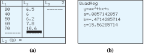

Section 4.3 Curve Fitting
Earlier, we used linear regression to fit a line to a collection of data points. In this section we'll see how to fit a quadratic equation to a collection of data points.
Subsection Finding a Quadratic Equation through Three Points
Every linear equation can be written in the form
To find a specific line we must find values for the two parameters (constants) \(m\) and \(b\text{.}\) We need two data points in order to find those two parameters. A quadratic equation, however, has three parameters, \(a,~b,~\) and \(c\text{:}\)
To find these parameters we need three data points.
Example 4.33.
Find values for \(a\text{,}\) \(b\text{,}\) and \(c\) so that the points \((1, 3)\text{,}\) \((3, 5)\text{,}\) and \((4, 9)\) lie on the graph of \(y = ax^2 + bx + c\text{.}\)
We substitute the coordinates of each of the three points into the equation of the parabola to obtain three equations:
or, equivalently,
This is a system of three equations in the three unknowns \(a\text{,}\) \(b\text{,}\) and \(c\text{.}\) To solve the system, we use Gaussian elimination. We first eliminate \(c\text{.}\) We subtract Equation (1) from Equation (2) to obtain
and then subtract Equation (1) from Equation (3) to get
We now have a system of two linear equations in two variables:
Next, we eliminate \(b\) from Equations (4) and (5): we add \(-3\) times Equation (4) to \(2\) times Equation (5) to get
| \(-24a\) | \(-\) | \(6b\) | \(=\) | \(-6\) | \(\hphantom{blank}\) | \(-3\times(4)\) |
| \(30a\) | \(+\) | \(6b\) | \(=\) | \(12\) | \(\) | \(2\times(5)\) |
| \(6a\) | \(\) | \(\) | \(=\) | \(6\) | \(\) | \(\) |
or \(a = 1\text{.}\) We substitute \(1\) for \(a\) in Equation (4) to find
Finally, we substitute \(-3\) for \(b\) and \(1\) for \(a\) in Equation (1) to find
Thus, the equation of the parabola is
The parabola and the three points are shown below.
Notebook 4.34. QuickCheck 1.
Notebook 4.35. Practice 1.

Subsection Applications
The simplest way to fit a parabola to a set of data points is to pick three of the points and find the equation of the parabola that passes through those three points.
Example 4.36.
Major Motors Corporation is testing a new car designed for in-town driving. The data below show the cost of driving the car at different speeds. The speeds, \(v\text{,}\) are given in miles per hour, and the cost, \(C\text{,}\) includes fuel and maintenance for driving the car \(100\) miles at that speed.
| \(v\) | \(30\) | \(40\) | \(50\) | \(60\) | \(70\) |
| \(C\) | \(6.50\) | \(6.00\) | \(6.20\) | \(7.80\) | \(10.60\) |
Find a possible quadratic model, \(~C=av^2+bv+c,~\) that expresses \(C\) in terms of \(v\text{.}\)
When we plot the data, it is clear that the relationship between \(v\) and \(C\) is not linear, but it may be quadratic, as shown at right.
We will use the last three data points, \((50, 6.20)\text{,}\) \((60, 7.80)\text{,}\) and \((70, 10.60)\text{,}\) to fit a parabola to the data. We would like to find the coefficients \(a\text{,}\) \(b\text{,}\) and \(c\) of a parabola \(C = av^2 + bv + c\) that includes the three data points. This gives us a system of equations:

Eliminating \(c\) from Equations (1) and (2) yields Equation (4), and eliminating \(c\) from Equations (2) and (3) yields Equation (5).
Eliminating \(b\) from Equations (4) and (5) gives us
We substitute this value into Equation (4) to find \(b = -0.5\text{,}\) then substitute both values into Equation (1) to find \(c = 16.2\text{.}\)
Thus, our quadratic model is
The graph of this function, along with the data points, is shown at right.

As was the case with linear regression, the graph of the regression equation may not pass through all of the data points, but it should be close to most of them.
Notebook 4.37. Practice 2.
Notebook 4.38. QuickCheck 2.
Subsection Using a Calculator for Quadratic Regression
We can use a graphing calculator to find an approximate quadratic fit for a set of data. The procedure is similar to the steps for linear regression.
Example 4.39.
Use your calculator to find a quadratic fit for the data in Example 4.36.
How many of the given data points actually lie on the graph of the quadratic approximation?
-
We press
STATENTERand enter the data under columns \(L_1\) and \(L_2\text{,}\) as shown below. Next, we calculate the quadratic regression equation and store it in \(Y_1\) by pressingSTAT\(\boxed{\rightarrow}\) \(5\)VARS\(\boxed{\rightarrow}\) \(1\) \(1\)ENTER.The regression equation has the form \(y = ax^2 + bx + c\text{,}\) where \(a = 0.0057\text{,}\) \(b = -0.47\text{,}\) and \(c = 15.56\text{.}\) Notice that \(a\text{,}\) \(b\text{,}\) and \(c\) are all close to the values we computed in Example 4.36.
 -
Next, we will graph the data and the regression equation. We press
Y=and select Plot1, then pressZOOM\(9\) to see the graph shown below. The parabola seems to pass close to all the data points.However, try using either the value feature or a table to find the \(y\)-coordinates of points on the regression curve. By comparing these \(y\)-coordinates with our original data points, we find that none of the given data points lies precisely on the parabola.

Notebook 4.40. Practice 3.
Subsection Choosing an Appropriate Model
We must be careful that our data set gives a complete picture of the situation we want to model. A regression equation may fit a particular collection of data and still be a poor model if the rest of the data diverge from the regression graph.

In Example 4.36, suppose Major Motors had collected only the first three data points and fit a line through them, as shown at left. This regression line gives poor predictions for the cost of driving at 60 or 70 miles per hour.
Example 4.41.
Delbert records the height of the tip of the minute hand on the classroom’s clock at different times. The data are shown in the table, where time is measured in minutes since noon. (A negative time indicates a number of minutes before noon.) Find a quadratic regression equation for the data and use it to predict the height of the minute hand's tip at \(40\) minutes past noon. Do you believe this prediction is valid?
| Time (minutes) |
\(-25\) | \(-20\) | \(-15\) | \(-10\) | \(-5\) | \(0\) | \(5\) | \(10\) | \(15\) | \(20\) | \(25\) |
| Height (feet) |
\(7.13\) | \(7.50\) | \(8.00\) | \(8.50\) | \(8.87\) | \(9.00\) | \(8.87\) | \(8.50\) | \(8.80\) | \(7.50\) | \(7.13\) |
We enter the time data under \(L_1\) and the height data under \(L_2\text{.}\) Then we calculate and store the quadratic regression equation in \(Y_1\text{,}\) as we did in Example 4.39. The regression equation is
From either the graph of the regression equation or from the table (see figure below), we can see that the fit is not perfect, although the curve certainly fits the data better than any straight line could.
If we scroll down the table, we find that this equation predicts a height of approximately \(4.08\) feet at time \(40\) minutes. (See figure (c).) This is a preposterous estimate! The position of the minute hand at \(40\) minutes after noon should be the same as it was exactly one hour earlier (at 20 minutes before noon), when it was \(7.50\) feet.
Caution 4.42.
Using the wrong type of function to fit the data is a common error in making predictions. In Example 4, we know that the minute hand of a clock repeats its position every \(60\) minutes. The graph of the height of its tip oscillates up and down, repeating the same pattern over and over. We cannot describe such a graph using either a linear or a quadratic function.
The graph of the height is shown at left, along with the graph of our quadratic regression equation. You can see that the regression equation fits the actual curve only on a small interval.
Even though your calculator can always compute a regression equation,that equation is not necessarily appropriate for your data. Choosing a reasonable type of regression equation for a particular data set requires knowledge of different kinds of models and the physical or natural laws that govern the situation at hand.
Notebook 4.43. QuickCheck 3.
Notebook 4.44. Practice 4.
Exercises Problem Set 4.3
Warm Up
For Problems 1 and 2, state the vertex, the \(y\)-intercept, and the \(x\)-intercepts of the parabola.
1.
\(y=-2(x-4)^2+10\)2.
\(y=\dfrac{1}{3}(x+1)^2-4\)3.
You are in charge of selling tickets to a one-woman show at a local art gallery. Tickets to the opening night were priced at $25, and you sold 30 tickets.
- Every night after the opening, you reduce the ticket price by $2. What is the ticket price after \(x\) nights?
- Every night after the opening, you sell 4 more tickets than the previous night. How many tickets did you sell \(x\) nights after the opening?
4.
The point \((-3,8)\) lies on the graph of \(y=ax^2+bx+c\text{.}\) Write an equation involving \(a,~b,\) and \(c\text{.}\)
For Problems 5–8, find an equation for the parabola. Use the vertex form or the factored form of the equation, whichever is more appropriate.
5.
6.

7.
8.

Skills Practice
For Problems 9–12, solve the system by elimination. Begin by eliminating \(c\text{.}\)
9.
10.
11.
12.
13.
Find values for \(a,~b,\) and \(c\) so that the graph of \(y = ax^2+bx+c\) includes the points \((-1,0), ~(2,12),\) and \((-2,8)\text{.}\)
14.
Find values for \(a,~b,\) and \(c\) so that the graph of \(y = ax^2+bx+c\) includes the points \((-1,2), ~(1,6),\) and \((2,11)\text{.}\)
Applications
15.
The data show the number of people of certain ages who were the victims of homicide in a large city last year.
| Age | \(10\) | \(20\) | \(30\) | \(40\) |
| Number of victims | \(12\) | \(62\) | \(72\) | \(40\) |
- Use the first three data points to fit a quadratic equation to the data, \(~N=ax^2+bx+c\text{,}\) where \(x\) represents age.
- What does your equation predict for the number of 40-year-olds who were the victims of homicide?
- Sketch the graph of your quadratic equation and the given data on the same axes.
16.
Sara plans to start a side business selling eggs. She finds that the total number of eggs produced each day depends on the number of hens confined in the henhouse, as shown in the table.
| Number of hens, \(n\) | \(15\) | \(20\) | \(25\) | \(30\) | \(36\) | \(39\) |
| Number of eggs, \(E\) | \(15\) | \(18\) | \(20\) | \(21\) | \(21\) | \(20\) |
- Use the first three data points to find a quadratic model, \(~E=an^2+bn+c\text{.}\)
- Plot the data and sketch the model on the same axes.
- What does the model predict for the number of eggs produced when 39 hens are confined in the henhouse?
17.
Find a quadratic formula for the number of diagonals that can be drawn in a polygon of \(n\) sides. Some data are provided.
| Sides | \(4\) | \(5\) | \(6\) | \(7\) |
| Diagonals | \(2\) | \(5\) | \(9\) | \(14\) |
18.
You are driving at a speed of 60 miles per hour when you step on the brakes. Find a quadratic formula for the distance in feet that your car travels in \(t\) seconds after braking. Some data are provided.
| Seconds | \(1\) | \(2\) | \(3\) | \(4\) |
| Feet | \(81\) | \(148\) | \(210\) | \(267\) |
19.
In the 1990's, an outbreak of mad cow disease (Creutzfeldt-Jakob disease) alarmed health officials in England. The table shows the number of deaths each year from the disease.
| Year | \('94\) | \('95\) | \('96\) | \('97\) | \('98\) | \('99\) | \('00\) | \('01\) | \('02\) | \('03\) | \('04\) |
| Deaths | \(0\) | \(3\) | \(10\) | \(10\) | \(18\) | \(15\) | \(28\) | \(20\) | \(17\) | \(19\) | \(9\) |
- The Health Protection Agency determined that a quadratic model was the best-fitting model for the data. Find a quadratic regression equation for the data.
- Use your model to estimate when the peak of the epidemic occurred, and how many deaths from mad cow disease were expected in 2005.
20.
The table shows the height in kilometers of a star-flare at various times after it exploded from the surface of a star.
| Time (seconds) | \(0.2\) | \(0.4\) | \(0.6\) | \(0.8\) | \(1.0\) | \(1.2\) |
| Height (kilometers) | \(6.8\) | \(12.5\) | \(17.1\) | \(20.5\) | \(22.8\) | \(23.9\) |
- Find the equation of the least-squares regression line for the height of the flare in terms of time.
- Use the regression line to predict the height of the flare 1.4 seconds after it exploded.
- Make a scatterplot of the data and draw the regression line on the same axes.
- Find the quadratic regression equation for the height in terms of time.
- Use the quadratic regression equation to predict the height of the flare 1.4 seconds after it exploded.
- Draw the quadratic regression curve on the graph from part (c).
- Which model is more appropriate for the height of the star-flare, linear or quadratic? Why?
21.
Some comets move about the sun in parabolic orbits. In 1973 the comet Kohoutek passed within 0.14 AU (astronomical units), or 21 million kilometers of the sun. Imagine a coordinate system superimposed on a diagram of the comet's orbit, with the sun at the origin, as shown below. The units on each axis are measured in AU.

- The comet's closest approach to the sun (called perihelion) occurred at the vertex of the parabola. What were the comet's coordinates at perihelion?
- When the comet was first discovered, its coordinates were \((1.68,-4.9)\text{.}\) Find an equation for comet Kohoutek's orbit in vertex form.
22.
The Akashi Kaikyo bridge in Japan is the longest suspension bridge in the world, with a main span of 1991 meters. Its main towers are 297 meters tall. The roadbed of the bridge is 14 meters thick and clears the water below by 65 meters. The cables on a suspension bridge hang in the shape of parabolas. Imagine a coordinate system superimposed on the diagram of the bridge, as shown in the figure.
- Find the coordinates of the vertex and one other point on the cable.
- Use the points from part (a) to find an equation for the shape of the cable in vertex form.